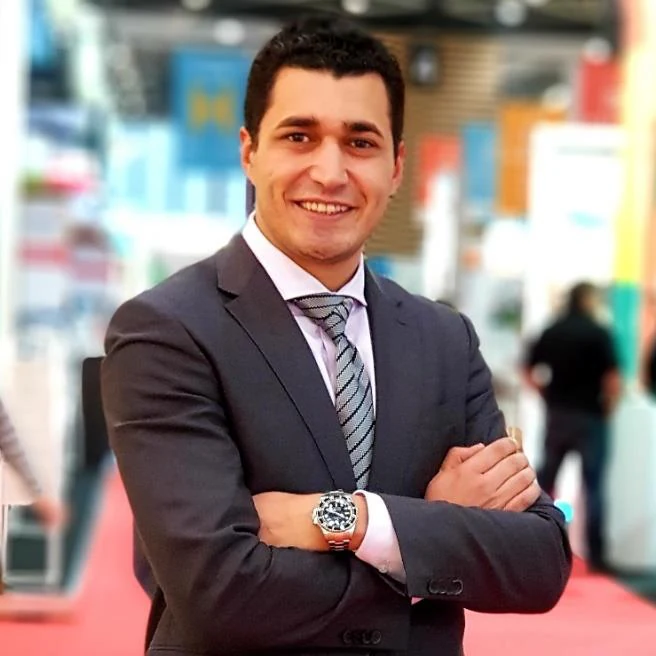

Cirta Capital LLC
Fundador, propietario y consultor industrial principal.
Sobre Cirta Capital
Cirta Capital es una firma de consultoría industrial dirigida por su fundador y construida sobre responsabilidad directa, criterio multidisciplinar y ejecución internacional.

Fundador y propietario
Ingeniero industrial, líder de operaciones y solucionador de problemas internacionales.
Aghiles Abdi trabaja desde 2012 en la intersección entre automatización industrial, commissioning, posventa, customer success y ejecución de proyectos. Sus misiones le han exigido moverse con naturalidad entre el armario de control, el proceso, el plan de proyecto, la oferta comercial y la reunión de dirección con el cliente.
Su trayectoria incluye funciones de liderazgo técnico y operativo en DEISA / COMSA Corporation y Condorchem Envitech, seguidas de consultoría técnica internacional en TraceLink para grandes cuentas farmacéuticas. Entre 2023 y 2025 trabajó como consultor industrial independiente, dirigiendo actividades de posventa, escalaciones complejas, commissioning, propuestas técnicas e intervenciones especializadas.
En 2026 fundó Cirta Capital LLC para ofrecer directamente a clientes industriales esa combinación de ingeniería, criterio empresarial y liderazgo intercultural.
Trayectoria profesional
Una carrera que evoluciona desde la ejecución de proyectos y la puesta en marcha hasta la dirección de operaciones, la transformación de posventa y la asesoría internacional.
Fundador, propietario y consultor industrial principal.
Dirección fraccional de posventa, commissioning, soporte PLC, actividad técnico-comercial y gestión de escalaciones de clientes.
Consultor técnico para proyectos internacionales, customer success y grandes cuentas farmacéuticas.
After-Sales Manager; anteriormente ingeniero técnico y responsable de puesta en marcha en proyectos internacionales.
Evolución desde adjunto de jefe de proyecto a director de operaciones, con plantas de tratamiento, commissioning, resolución electromecánica y equipos del cliente.
Alcance técnico y directivo
Cirta Capital aporta más valor donde se cruzan la ingeniería, las operaciones, el servicio y la gestión del cliente.
Por qué Cirta Capital
La firma mantiene un enfoque deliberadamente directo: acceso al fundador, un alcance cuidadosamente definido y capacidad para incorporar especialistas independientes cualificados cuando un proyecto requiere experiencia o capacidad adicional.
Hablar de una misión →